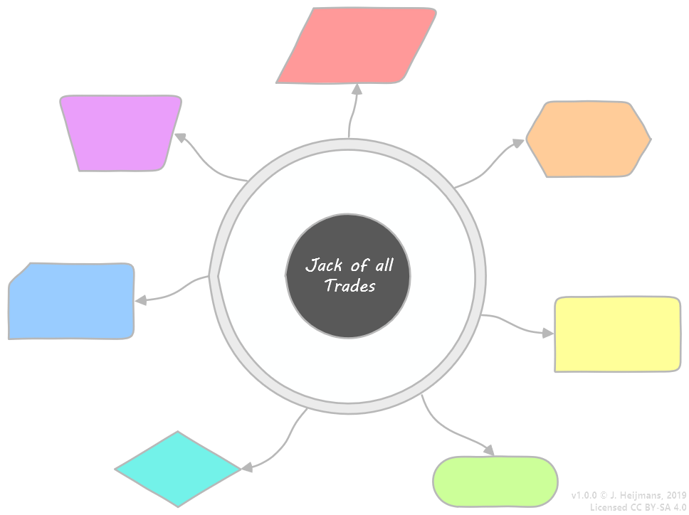

Learning at Lightning Speed
Jeroen Heijmans
INFI-CON 2019, May 27th
Welcome
About me
The framework
The framework
Center: You!
Satellites: Methods.
Ring: Empathy...
Conscientiousness is the personality trait of being careful, or diligent...
...they also are less likely to engage in antisocial and criminal behavior.
1. Tests
[Fact] // "Test"
public void Can_serialize_regular_object() {
var result = JsonConvert.SerializeObject(new Bar { Name = "Moe's" });
Assert.Equal("{\"Name\":\"Moe's\"}", result);
}
[Fact] // "Test"
public void Can_serialize_dynamic_object() {
var result = JsonConvert.SerializeObject(new { Answer = 42 });
Assert.Equal("{\"Answer\":42}", result);
}
[Fact] // "Test"
public void Can_serialize_circular_reference() {
var input = new Dictionary<string, object>();
input["Nemesis"] = input;
var result = JsonConvert.SerializeObject(input);
Assert.NotNull(result); // Fails! TODO: Invert assertion.
}
- Empathy will unveil your bias (that's affecting your assumptions)
- Adopting the other's mindset helps you invent the right tests
2. Questions

3. Issues
4. Repros
- Finding your own resolution
- Getting quicker resolution
- For future reference
5. Examples
Examples should be exemplary!
6. Teaching
If you want to get good at something, start teaching it!
7. Exploring
// Proposal TC39: Public/private class fields in Javascript
class Tc39Test {
#foo = "ryan"; // Private field!
bar = "announcement"; // Public field.
get old() { return "school"; }
get backdoor() { return this.#foo; }
}
let thing = new Tc39Test();
console.log(thing.old); // "school"
console.log(thing.bar); // "bar"
console.log(thing.foo); // undefined
console.log(thing.backdoor); // "ryan"
Summarizing
Be conscientiouss
- You are at the Center
- Remember the Ring of Empathy
- Pick a Satellite
Thanks for listening!
Questions?
If there's time...
References
github.com/tc39/proposal-class-fields
cooking.stackexchange.com/questions/50468/why-place-potatoes-on-salt
cooking.stackexchange.com/questions/22405/make-a-palindrome-cocktail
cooking.stackexchange.com/questions/46531/classic-sauce-bolognese-ragù-bolognese
github.com/infi-nl/coding-dojo-netcore